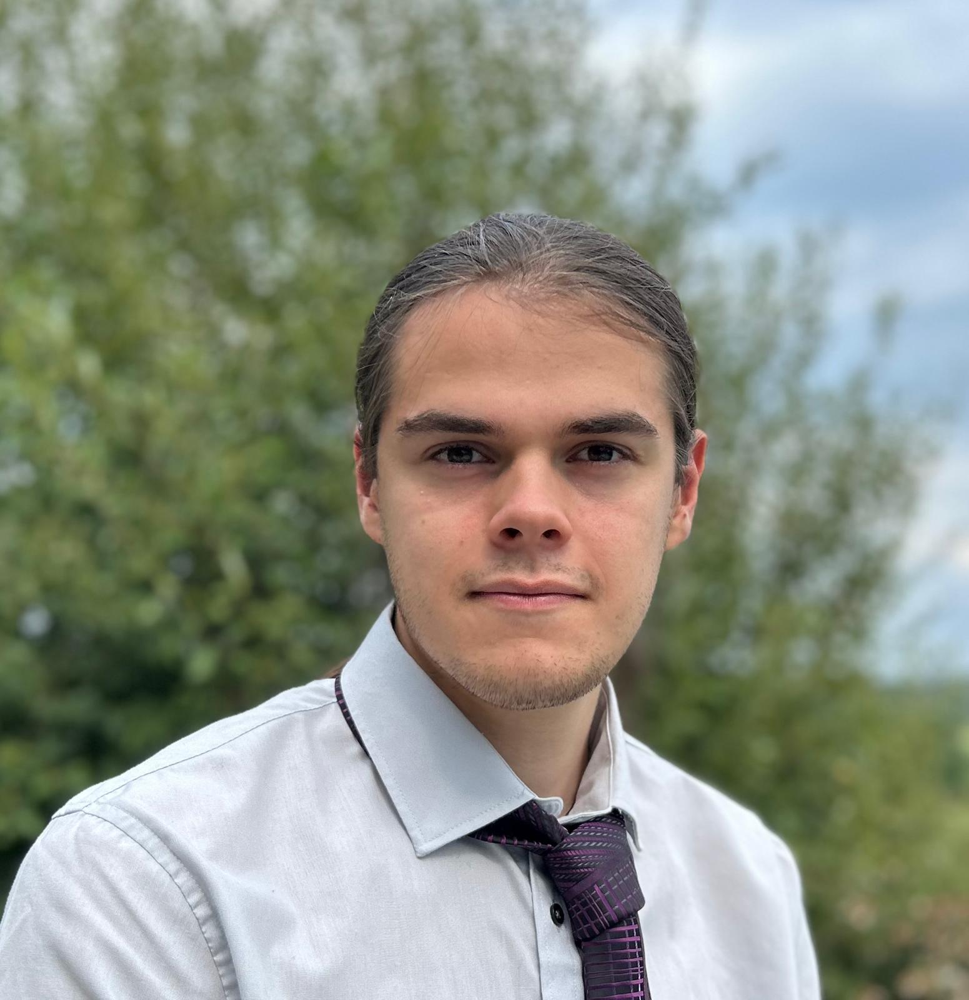

Aujourd'hui, je conçois des solutions logicielles, des outils d'automatisation et des prototypes d'IA appliquée pour des entreprises – notamment des cabinets comptables et des PME. Mon objectif est simple : transformer des contraintes métier en outils concrets qui font gagner du temps, réduisent la charge mentale et s'intègrent naturellement dans le quotidien des équipes.
J'aime travailler au plus près du terrain : discuter avec les personnes qui utilisent les outils, comprendre leurs habitudes, leurs irritants, leurs contraintes de temps. C'est cette proximité qui guide mes choix techniques et ma façon de concevoir un logiciel : clair, robuste et utile dès le premier jour.
Ma première approche de l'informatique s'est faite au collège avec le logiciel Scratch (Mon profil) qui m'a permis de découvrir les bases de la programmation et d'écrire mes premiers algorithmes. J'ai ensuite continué à explorer la programmation avec mes premiers scripts en Python.
Au lycée, j'ai vraiment pris goût au développement, d'abord en autonomie puis grâce à la spécialité Informatique et Sciences du Numérique (ISN), où j'ai réalisé mes premiers projets concrets.
Après un baccalauréat scientifique avec l'option ISN, j'ai poursuivi mon parcours en intégrant la prépa intégrée Prep'ISIMA puis l'école d'ingénieurs ISIMA, dont je suis diplômé. Ce cursus m'a apporté une base solide en développement logiciel, en informatique industrielle et en intelligence artificielle.
Mes langages de prédilection sont le C/C++ et Python, que j'utilise aussi bien pour des applications système que pour des outils d'automatisation et des projets IA. Je suis également à l'aise pour concevoir des applications en C#, Rust, Java, GDScript, ainsi qu'avec différentes technologies et frameworks selon les besoins du projet.
Au-delà des langages, je m'intéresse particulièrement à l'observabilité, à la qualité logicielle et à la mise en production d'outils fiables : instrumentation, dashboards, supervision, tests, documentation et retours utilisateurs.